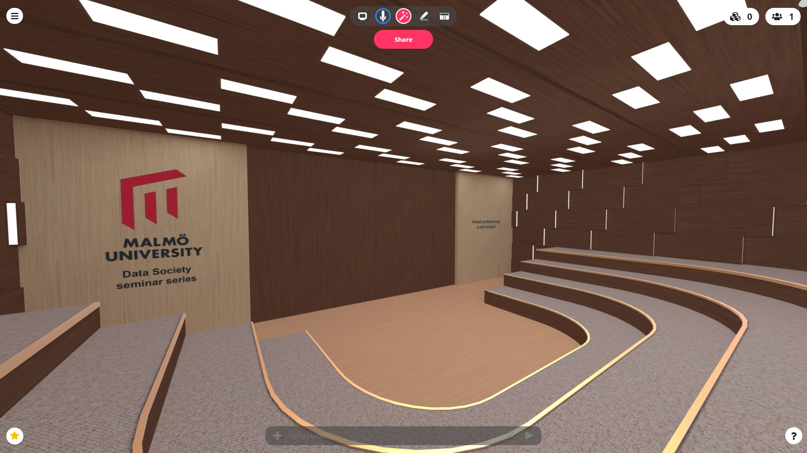

Data Society seminar series with Jay David Bolter
A talk about Virtual and Augmented Reality inside a VR space:
Reality Media: Uncanny Valleys and Uncanny Spaces
Welcome to talk held in a web-based Virtual Reality room, using the Mozilla Hubs technology. Click the link below to enter. After the talk, we would love it if you could take the time
to fill out a survey for our project about Virtual Conferencing. You find the link to the survey below as well. Thank you!
Click here to enter room
Click here to fill out the survey

EXiTek 2021 - Digital Vernissage
Klicka här för att läsa mer om EXiTek 2021
Välkommen till EXiTeks digitala vernissage! Vernissagen är uppdelad i tre Virtual Reality-rum som du finner nedan. Vilka projekt som finns i varje står listade över länken du använder för att ta dig vidare till respektive rum.
Dessa rum är dessutom skapade som en del i ett pilotprojekt på Malmö Universitet som tittar närmare på hur vi kan använda VR-teknik
i forsking och lärande. I och med detta ber vi dig att efter ditt besök fylla i vårt undersökningsformulär som du kommer till om du klickar på knappen nedan. Tack på förhand!
Till formuläret
Rum 1
- Bjuder din organisation in till att arbeta med sociala medier som ett verktyg för kunskapsdelning?
Klara Kalén och Mimmi Niemi
- Digital kommunikation i virtuella team
Simone Nyman och Alfred Persson
- Digital kommunikation vid förändringsarbete i en organisation
Josefin Lindholm och Veronica Mourice
- En studie om hur digitaliseringen under pandemin har påverkat patientvården
Adelina Veseli och Viviana Cea Rojas
- Strategier för att förebygga motstånd och främja förändringsvilja vid implementering av IT-system
Tea Cvjetinovic och Tilde Thell
- Påtvingat distansarbete - dess relation till acceptans och påverkan på produktivitet
Dler Hassan och Fehmi Sulejman
- Artificiell intelligens och dess påverkan på bilindustrins medarbetare
Luka Rozic och Damon Salehi
- Så styr algoritmer ditt flöde. En studie om personliga algoritmer inom sociala medier
Nelly Nilsson och Matilda Larsson
- Datadrivna beslutsstöd inom besöksnäringen - en fallstudie på en svensk skidanläggning
Yvonne Neu Jönsson Oskar Lindström
Rum 2
- Ledarskapets nya villkor i en digital miljö
Emma Corselli och Matilda Åkerma
- Supply Chain Management: en studie om QR-kodens potentiella påverkan inom dagligvarubranschen - Hur kommer organisationer inom dagligvarubranschen förändras när streckkoden ersätts av QR-kod?
Alexandra Wallbäck och Rebecca Wahlberg
- Personal informatic - den mätbara kroppen
Alex Montebovi och Elias Nilsson
- Hur påverkar AI rekryteringsprocessen?
Esra Elfigi och Mahboobeh Roohbakhsh
- Digital vulnerability in a digital home during COVID-19
Jonathan Järlhem och Jakob Stigsson
- Den digitala ledaren
Emil Berg och Emiliano Garay
- Zoomstudenter - En jämförelse av utbildningsplaner för digital undervisning och arbetsmarknadens kravprofiler
Oskar Prahl och Isabel Sandström
- EXPECTATIONS VS REALITY En kvalitativ studie om användares förväntningar på BI-system i svenska små och medelstora företag
Loviza Lindström och Elin Bidmark
Rum 3
- Kommunicera IT på verksamhetsnivå
Niklas Isaksson-Bengtsson och Mikaela Klein
- Digitalisering av affärsmodell: En studie av detaljhandelns digitala omställning till följd av Covid-19
Malin To och Vilma Larsson
- Informatiksamhällets hot mot individens rättigheter i det moderna och demokratiska samhället
Aladdin Othman och August persson
- Hur har distansarbetet och digitaliseringen som tillkommit till en följd av Covid-19 påverkat organisationers organisationskultur?
Emma Juvin och Filippa Olsson
- Ledarskap och ansvar vid omställning
Peter Malmström och Valentina Ketikidis
- Etik och teknisk innovation
Isak Emitslöf och Jacob Rutgersson
- Framtidens AI: Etik, oro och Reglering
Herolind Ajeti och Dennis Svensson
- Teknisk skuld ur ett organisationsteoretiskt perspektiv
Gabriel Jönsson och Tobias Jönsson
- Cookies - integritet och etik
Samuel Rosqvist och Philip Olsson
Om EXiTek 2021
När världen som vi känner den står och väger ges oss möjligheten att reflektera och värdera det vi har för
händerna på nya sätt. Det här är en central utgångspunkt för arbetet med allt det som it & ekonomiprogrammet
involverar. Givet det vi nu står mitt i, en ny framväxande normal, blir vikten av en sådan utgångspunkt än
tydligare. Den 25-26 maj ges arbetskonferensen EXiTek2021. Det är studenterna från it och ekonomiprogrammet som
nu läser sin sista termin på Malmö Universitet som kommer att presentera och diskutera sina examensarbeten.
Totalt är det 26 författarteam som under vårterminen kommer färdigställa sina arbeten. Det är fjärde gången som
konferensen ges och fjärde kullen studenter som avslutar sina studier från programmet. Den pågående pandemin
tvingande oss förra året att genomföra konferensen helt digitalt via Zoom. Det var ett arrangemang som då gav
mersmak och som vi ser fram emot att utveckla årets konferens vidare. “…The original idea of the web was that
it should be a collaborative space where you can communicate through sharing information...” – Tim Berners-Lee
Du har möjligheten att delta i den samarbetsyta som konferensen öppnar upp. Den är öppen för dig som är nyfiken
på och vill ta del av studenternas projektresultat. Den är också öppen för dig som vill vara en aktiv deltagare
och kritisk vän till ett eller flera av de arbeten som diskuteras på konferensen. Om du är intresserad av att '
agera som kritisk vän på konferensen i maj och har frågor om vad det innebär att ta den rollen, är du välkommen
att ta kontakt med Carl Johan Orre, carljohan.orre@mau.se .